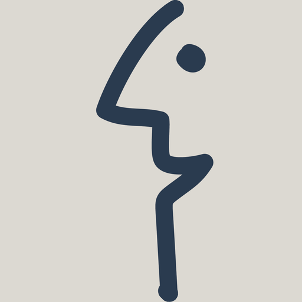
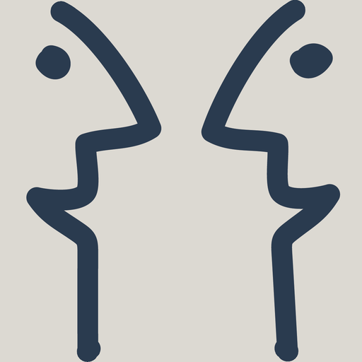
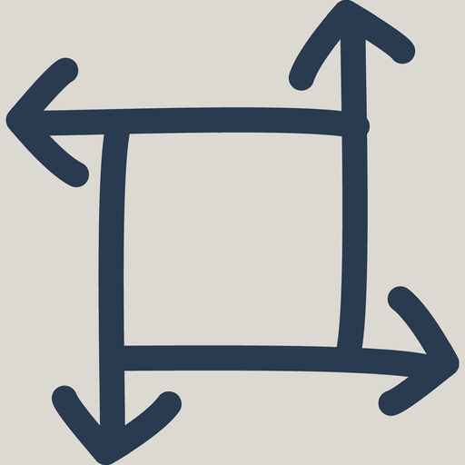
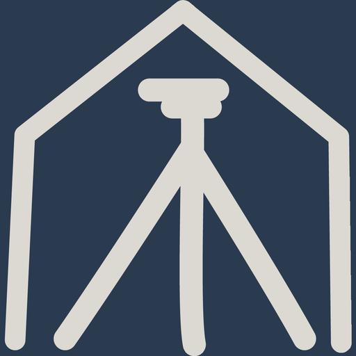
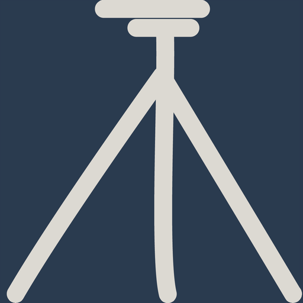

Alle halten die CD-Regel ein: Basismodule Greige mit Motiv in Secondary Navy, Wahlmodule umgekehrt, Schrift auf blauem Grund weiss. Unterschiedlich sind Grösse, Beschnitt und Umgebung der Fläche. Variante E steht zuoberst und ist im Prototyp umgesetzt.
Format und Textführung wie Variante B, aber ohne Beschnitt: Die Kachel ist vollflächig in der Modulfarbe, das Motiv steht kleiner und mittig darin und bekommt ringsum Luft in derselben Farbe. Weil die Eyecatcher ihre Flächenfarbe selbst mitbringen, ist keine Bildkante sichtbar. Diese Variante ist im Prototyp eingebaut.

Modul B1 Persönliche Kompetenzen
Modul B2 Kommunikation
Modul B3 Geschäftsprozesse Modul B4 Geomatik + IT Modul B5 IT Administration Modul S2
3D-Geodaten
Modul S3
Landmanagement
Modul S2
3D-Geodaten
Modul S3
Landmanagement

Modul S4 Geomatik im Bauwesen Modul S5 GIS
Modul S6 Erfassungstechnik Modul S7 Fixpunkte Modul S8 BautechnikWie viel Luft das Motiv bekommt, lässt sich frei einstellen. Links wenig (9 %), in der Mitte der Vorschlag (14 %), rechts viel (20 %).
Gleiche Kachel wie bisher, aber der Abschnitt steht auf Deep Geo Navy. Die Greige-Flächen haben plötzlich Halt und wirken als Fläche statt als heller Fleck auf Weiss – genau das Problem, das auf der Startseite auffällt. Kleinster Eingriff mit grosser Wirkung.
Das Motiv wird herangezoomt und angeschnitten, der Text sitzt direkt auf der Farbfläche. Der Leerraum um die Zeichnungen verschwindet, die Kacheln bekommen Gewicht. Die stärkste Bildwirkung – die Motive sind allerdings nicht mehr vollständig zu sehen.
Kein Weissraum zwischen den Kacheln: Die Basismodule bilden eine zusammenhängende Greige-Fläche, die Wahlmodule eine Navy-Fläche, getrennt nur durch eine Haarfuge. Die Module lesen sich als zwei Blöcke statt als 13 Einzelteile – nah an einer gedruckten Modulübersicht.
Der Eyecatcher wird zum Farbmarker: klein, quadratisch, links. Der Blick läuft an einer Kante entlang statt über 13 grosse Felder. Braucht am wenigsten Platz und bleibt auch bei 20 Modulen übersichtlich – wirkt dafür sachlich statt plakativ.
Modul S2
3D-Geodaten
Modul S3
Landmanagement
Modul S4
Geomatik im Bauwesen
Modul S5
GIS
Modul S6
Erfassungstechnik
Modul S7
Fixpunkte
Modul S8
Bautechnik